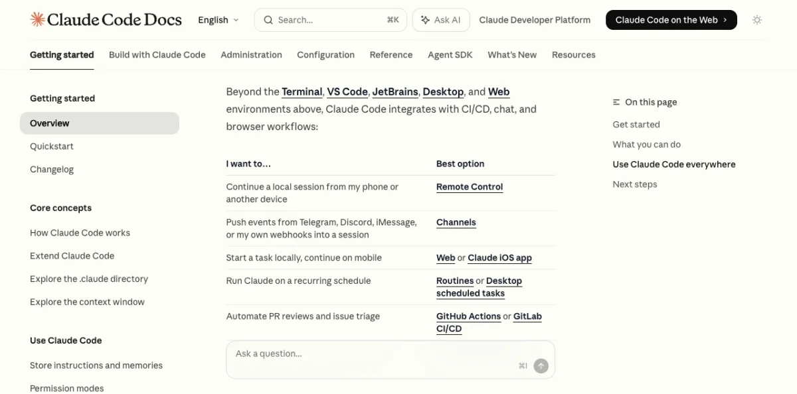
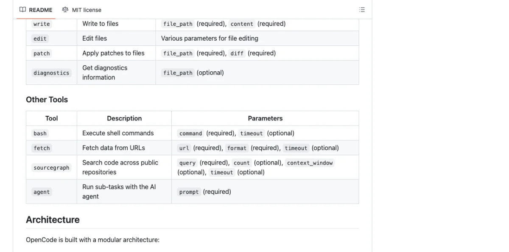

Appendix C Prompt Library for Design Tasks
Battle-tested prompts for common agentic design tasks. Copy them into your agent session, swap the bracketed values, and ship. Verified as of May 2026.
Prototyping Prompts
Quick wireframes, interactive prototypes, and dashboard layouts. These prompts work across tools --- adjust the tool reference for your setup.

| Prompt | Target Tool(s) | Expected Output |
|---|---|---|
| Quick Wireframe | Any | Gray-block layout with information architecture |
| Interactive App Prototype | Huashu Design | Clickable iOS prototype with real images |
| Web Prototype | Open Design | Styled web page with hero, features, pricing |
| Mobile Onboarding Flow | Open Design | 3-screen dark mode onboarding |
| Dashboard Prototype | Open Design | Admin dashboard with sidebar, KPI cards, table, chart |
Quick wireframe --- works with any tool:
Create a wireframe for a [type] app with [key screens].
Use gray blocks for content areas. No styling needed ---
just layout and structure. Show me the information architecture.Interactive iOS prototype --- Huashu Design:
Build an iOS prototype for a [app description] ---
[4 screens], actually clickable. Use real images from
Wikimedia/Unsplash. Include navigation between screens.Web prototype with design system --- Open Design:
Using the [design-system-name] design system, create a
web prototype for [product description]. Target audience:
[audience]. Tone: [tone]. Include hero, features, and
pricing sections.Mobile onboarding flow --- Open Design:
Create a 3-screen mobile onboarding flow for [app name].
Screen 1: Splash with brand mark
Screen 2: Value proposition (3 key benefits)
Screen 3: Sign-in form
Use [design-system] style. Dark mode.Dashboard prototype --- Open Design:
Build an admin dashboard for [use case]. Include:
- Sidebar navigation (6 items)
- KPI cards (4 metrics)
- Data table with sorting
- Chart section
Use the [design-system] design system.Visual Design Prompts
Landing pages, brand identities, and design direction exploration. These prompts combine design tools with agent capabilities.
| Prompt | Target Tool(s) | Expected Output |
|---|---|---|
| Landing Page Build | Paper + Claude Code | React + Tailwind website from Paper design |
| Design Direction Advisor | Huashu Design | 3 distinct visual directions to choose from |
| Brand-Consistent Design | Huashu Design | Design using real brand assets |
| Token Sync | Paper + Figma MCP | Design tokens migrated from Figma to Paper |
Landing page from Paper design:
I'd like you to build a website in this folder using the
landing page I have selected in Paper. Use React and
Tailwind for the styling. Start with the hero section,
then build out the remaining sections one at a time.Design direction exploration --- Huashu Design:
I need a visual identity for [project description].
Give me 3 style directions to pick from. Make them
visually distinct from each other.Brand-consistent design --- Huashu Design:
Design a [deliverable] for [brand name]. Follow the
Core Asset Protocol: find their official brand assets
(logo, colors, fonts, product shots) before starting.
Their website is [URL].Token sync between Figma and Paper:
Create a design system in Paper that matches the design
system in the currently open Figma file. Include colors,
text styles, and spacing tokens. Read from Figma, write
to Paper.My take: The most effective prompts are specific about output format and constraints. "Build me a website" produces garbage. "Build a React + Tailwind landing page from the Paper selection, starting with the hero section" produces something usable in one shot. Specificity is the lever that turns an agent from a toy into a tool.
Motion Design Prompts
Product videos, social content, and data animations. These prompts target Remotion and Hyperframes --- two different approaches to programmatic video.
Product launch video --- Huashu Design:
Turn this product description into a 60-second launch
animation. Export MP4 and GIF. Use the Stage + Sprite
model. Include: title reveal, feature showcase, CTA.Explainer video --- Hyperframes:
Using /hyperframes, create a 10-second product intro
with a fade-in title, a background video, and background
music. Resolution: 1920x1080.Social media video --- Hyperframes:
Make a 9:16 TikTok-style hook video about [topic] using
/hyperframes, with bouncy captions synced to a TTS
narration. Include a lower third at 0:03 with my name
and title.Data animation --- Hyperframes:
Turn this CSV data into an animated bar chart race using
/hyperframes. 15-second duration. Dark theme. Include
axis labels and a title card.Iterate on video --- Hyperframes:
Make the title 2x bigger, swap to dark mode, and add
a fade-out at the end. Add a lower third at 0:03 with
"Product Launch 2026".Motion design hero --- Open Design:
Create a motion-design hero with looping CSS animations.
Include rotating type ring, animated globe, and ticking
timer. Single-frame, hand-off ready for Hyperframes.Design System Prompts
Creating, syncing, and maintaining design systems with agents. These prompts handle the tedious parts of design system management.
Create a design system from an existing website:
Create a DESIGN.md for [product/company name] based on
their existing website at [URL]. Include: color palette
(hex values), typography (font families, sizes, weights),
spacing scale, component patterns, motion guidelines,
anti-patterns to avoid.Sync tokens between Figma and Paper:
Read the design tokens from the Figma file (colors,
text styles, spacing) and create matching design tokens
in the Paper file. Use the same variable names. Create
a sticker sheet showing all tokens.Generate component library --- OpenPencil:
Design a component library for [design system] with these
components: Button (3 variants), Input, Card, Modal,
Navigation, Badge. Use design variables for colors and
spacing. Export as React + Tailwind.Maintain token parity --- Pencil:
Read the design variables from the .pen file and compare
them with the CSS custom properties in src/styles/tokens.css.
List any discrepancies and fix them to match the .pen source
of truth.Production UI Prompts
Design artifacts to production code. These prompts enforce accessibility, performance, and responsive design standards.

| Prompt | Target Tool(s) | Expected Output |
|---|---|---|
| Design to Production Code | Paper + Claude Code | Accessible React + Tailwind component |
| Responsive Breakpoints | Paper | Mobile-first responsive layout |
| Accessibility Audit | Any | Fixed a11y issues with change summary |
| Performance Optimization | Any | Core Web Vitals improvements |
Design to production code:
Read the [section] frame I have selected in Paper and
build it as a React component using Tailwind. Follow
these rules:
1. Use semantic HTML elements (nav, main, section, article)
2. All images must have descriptive alt text
3. All interactive elements must be keyboard accessible
4. Use the design tokens from our DESIGN.md
5. Ensure color contrast ratio >= 4.5:1 for body text
Commit the changes when done.Responsive breakpoints from Paper frames:
Add responsive breakpoints to the website based on the
frames I have selected in Paper. Each frame is a different
breakpoint:
- 375px frame = mobile (default)
- 768px frame = tablet (md:)
- 1440px frame = desktop (xl:)
Use Tailwind responsive classes. Test each breakpoint.Accessibility audit:
Review the generated code for accessibility issues:
1. Missing alt text on images
2. Missing labels on form inputs
3. Insufficient color contrast (< 4.5:1 for text)
4. Missing ARIA attributes on custom widgets
5. Keyboard navigation gaps
6. Missing focus indicators
Fix all issues found. Show me what you changed.Performance optimization:
Optimize the generated code for Core Web Vitals:
1. Add width/height to all images to prevent CLS
2. Lazy-load below-fold images with loading="lazy"
3. Preload critical fonts
4. Minimize CSS by removing unused Tailwind classes
5. Add proper srcset for responsive images
Show me the Lighthouse score improvements.My take: The accessibility audit prompt is the single most valuable prompt in this appendix. Agents are better than most developers at catching a11y issues systematically --- they don't get tired, they don't skip steps, and they check every element. Make this prompt part of every design-to-code workflow.
Multi-Tool Workflow Prompts
Chains that span multiple tools. These prompts coordinate across MCP servers and agent sessions to accomplish tasks no single tool handles alone.
Full website build --- Paper to deployment:
Phase 1 - Design:
"I have a landing page design in Paper. Read the hero
section using the Paper MCP and build it with React +
Tailwind."
Phase 2 - Git checkpoint:
"Add git to this folder and commit the changes."
Phase 3 - Responsive:
"Add responsive breakpoints based on the frames I have
selected in Paper. Each frame is a different breakpoint."
Phase 4 - Deploy:
"Deploy this to [Vercel/Netlify]. Set up a production
build."Figma to Paper to code migration:
Step 1: Read the design tokens from the Figma file and
create them in Paper.
Step 2: Copy each section from Figma to Paper, maintaining
layout fidelity.
Step 3: Verify the Paper design matches the Figma original.
Step 4: Generate React + Tailwind from the Paper design.Pitch deck to video pipeline --- Open Design to Hyperframes:
Step 1: "Using the magazine-deck skill, create a 10-slide
pitch deck for [startup]. Use [design-system] visual style."
Step 2: "Take slide 1 (the hero) and turn it into a 5-second
intro animation using /hyperframes. Add a cinematic background
and title reveal."
Step 3: "Render all animations and assemble into a final
60-second pitch video with transitions between each slide."Design system to component library --- Pencil + OpenPencil:
Step 1: "Design the Button, Input, and Card components in
the .pen file. Define color, spacing, and typography variables."
Step 2: "Export the components as React + Tailwind. Map
design variables to CSS custom properties."
Step 3: "Create a Storybook story for each component showing
all variants. Include accessibility testing in each story."Each prompt in this appendix is designed to be copied directly into an agent session. Swap bracketed values for your project specifics. The prompts that work best are specific about output format, tool selection, and quality constraints. Vague prompts produce vague output.